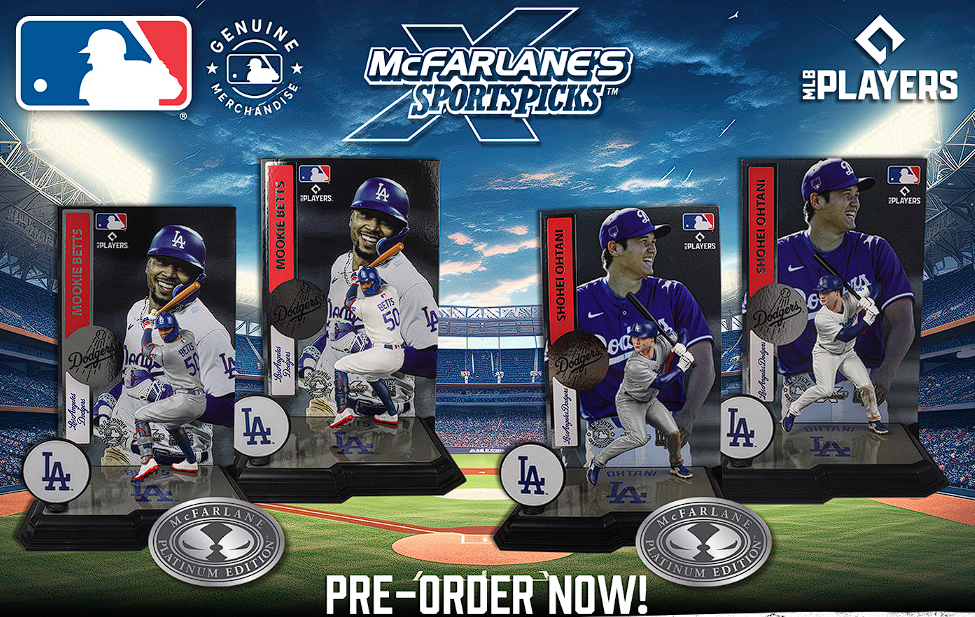

Preorder Now!!!!

Preorder the latest McFarlane Toys MLB action figures today!
Known for their realism and detail, McFarlane Toys has crafted figures of legendary Hall of Famers,
rookie sensations, and current superstars, all in iconic poses and authentic uniforms. These high-quality collectibles are perfect for any baseball fan or collector.
Preordering is easy: visit McFarlane, select your favorites, and complete the checkout. Enjoy benefits like guaranteed availability, exclusive offers, and priority shipping. Don’t miss out—bring home the excitement of Major League Baseball with these must-have figures!.
The New Major League Baseball Action Figure
Major League Baseball is the top professional baseball league in the world,
and McFarlane Toys has been making realistic and detailed action figures for the league since 2001.
Products assortment have ranged from legendary Hall of Fame players, to rookie sensations, to current superstars in iconic poses and uniforms